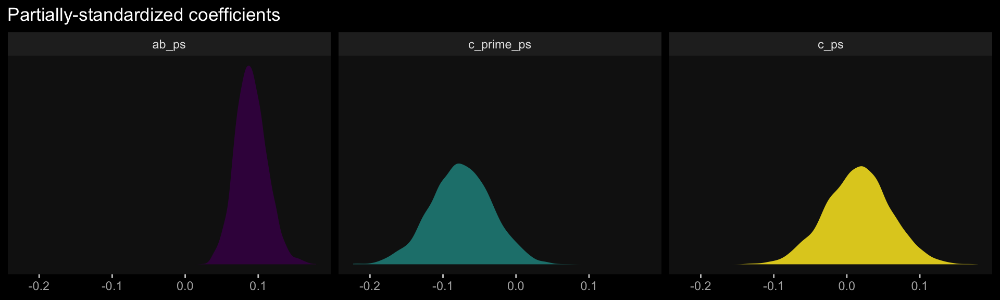

4 Causal Steps, Confounding, and Causal Order
Comfort with [the principles of the basic mediation model] allows you to conduct mediation analysis and use it to shed light on your research questions and hypotheses about causal processes. In this chapter, [we] take up a variety of complications, including testing and ruling out various alternative explanations for associations observed in a mediation analysis, effect size, and models with multiple causal agents and outcomes. (Andrew F. Hayes, 2018, p. 113)
4.1 What about Barron and Kenny?
Complete and partial mediation are concepts that are deeply ingrained in the thinking of social and behavioral scientists. But I just don’t see what they offer our understanding of a phenomenon. They are too sample-size-dependent and the distinction between them has no substantive or theoretical meaning or value of any consequence. I recommend avoiding expressing hypotheses about mediation or results of a mediation analysis using these terms. (p. 121)
Agreed.
4.2 Confounding and causal order
One of the beautiful features of experiments is the causal interpretations they afford about differences between groups. Good experimentation is tough and requires lots of careful planning and strict control over experimental procedures, construction of stimuli, treatment of participants, and so forth. But when done well, no research design gives a researcher more confidence in the claim that differences between groups defined by \(X\) on some variable of interest is due to \(X\) rather than something else. Given that a mediation model is a causal model, the ability to make unequivocal causal claims about the effect of \(X\) on \(M\) and the direct and total effects of \(X\) on \(Y\) gives experiments tremendous appeal.
Absent random assignment to values of \(X\), all of the associations in a mediation model are susceptible to confounding and epiphenomenal association, not just the association between \(M\) and \(Y\). Whether one’s design includes manipulation and random assignment of \(X\) or not, it behooves the researcher to seriously ponder these potential threats to causal inference and, if possible, do something to reduce their plausibility as alternative explanations for associations observed. (pp. 121–122, emphasis in the original)
4.2.1 Accounting for confounding and epiphenomenal association.
Here we load a couple necessary packages, load the data, and take a peek at them.
library(tidyverse)
estress <- read_csv("data/estress/estress.csv")
glimpse(estress)## Rows: 262
## Columns: 7
## $ tenure <dbl> 1.67, 0.58, 0.58, 2.00, 5.00, 9.00, 0.00, 2.50, 0.50, 0.58, 9.00, 1.92, 2.00, 1.42, 0.92, 2…
## $ estress <dbl> 6.0, 5.0, 5.5, 3.0, 4.5, 6.0, 5.5, 3.0, 5.5, 6.0, 5.5, 4.0, 3.0, 2.5, 3.5, 6.0, 4.0, 6.0, 3…
## $ affect <dbl> 2.60, 1.00, 2.40, 1.16, 1.00, 1.50, 1.00, 1.16, 1.33, 3.00, 3.00, 2.00, 1.83, 1.16, 1.16, 1…
## $ withdraw <dbl> 3.00, 1.00, 3.66, 4.66, 4.33, 3.00, 1.00, 1.00, 2.00, 4.00, 4.33, 1.00, 5.00, 1.66, 4.00, 1…
## $ sex <dbl> 1, 0, 1, 1, 1, 1, 0, 0, 1, 1, 1, 1, 1, 1, 1, 1, 1, 1, 0, 0, 0, 1, 1, 1, 0, 1, 0, 0, 0, 1, 0…
## $ age <dbl> 51, 45, 42, 50, 48, 48, 51, 47, 40, 43, 57, 36, 33, 29, 33, 48, 40, 45, 37, 42, 54, 57, 37,…
## $ ese <dbl> 5.33, 6.05, 5.26, 4.35, 4.86, 5.05, 3.66, 6.13, 5.26, 4.00, 2.53, 6.60, 5.20, 5.66, 5.66, 5…As we learned in Section 2.3, the psych::lowerCor() function makes it easy to estimate the lower triangle of a correlation matrix.
psych::lowerCor(estress, digits = 3)## tenur estrs affct wthdr sex age ese
## tenure 1.000
## estress 0.068 1.000
## affect -0.065 0.340 1.000
## withdraw -0.035 0.064 0.417 1.000
## sex -0.003 0.133 0.046 0.050 1.000
## age 0.266 0.066 -0.018 -0.035 0.083 1.000
## ese -0.060 -0.158 -0.246 -0.243 0.028 -0.083 1.000Let’s open brms.
library(brms)Recall that if you want the correlations with Bayesian estimation and those sweet Bayesian credible intervals, you set up an intercept-only multivariate model.
model4.1 <- brm(
data = estress,
family = gaussian,
bf(mvbind(ese, estress, affect, withdraw) ~ 1) +
set_rescor(TRUE),
cores = 4,
file = "fits/model04.01")Behold the summary.
print(model4.1, digits = 3)## Family: MV(gaussian, gaussian, gaussian, gaussian)
## Links: mu = identity; sigma = identity
## mu = identity; sigma = identity
## mu = identity; sigma = identity
## mu = identity; sigma = identity
## Formula: ese ~ 1
## estress ~ 1
## affect ~ 1
## withdraw ~ 1
## Data: estress (Number of observations: 262)
## Draws: 4 chains, each with iter = 2000; warmup = 1000; thin = 1;
## total post-warmup draws = 4000
##
## Population-Level Effects:
## Estimate Est.Error l-95% CI u-95% CI Rhat Bulk_ESS Tail_ESS
## ese_Intercept 5.607 0.060 5.490 5.726 1.002 6844 3153
## estress_Intercept 4.620 0.088 4.448 4.793 1.000 7567 3492
## affect_Intercept 1.598 0.045 1.508 1.683 1.001 5188 3369
## withdraw_Intercept 2.321 0.078 2.168 2.479 1.001 6357 3483
##
## Family Specific Parameters:
## Estimate Est.Error l-95% CI u-95% CI Rhat Bulk_ESS Tail_ESS
## sigma_ese 0.954 0.042 0.876 1.039 1.000 7737 3384
## sigma_estress 1.436 0.063 1.318 1.563 1.002 6770 2998
## sigma_affect 0.729 0.032 0.670 0.793 1.001 5697 3159
## sigma_withdraw 1.256 0.055 1.153 1.368 1.003 7687 3445
##
## Residual Correlations:
## Estimate Est.Error l-95% CI u-95% CI Rhat Bulk_ESS Tail_ESS
## rescor(ese,estress) -0.155 0.061 -0.273 -0.037 1.000 6196 3193
## rescor(ese,affect) -0.239 0.059 -0.356 -0.123 1.000 5193 3223
## rescor(estress,affect) 0.335 0.054 0.229 0.436 1.000 5240 2807
## rescor(ese,withdraw) -0.237 0.059 -0.348 -0.122 1.000 4931 3133
## rescor(estress,withdraw) 0.062 0.061 -0.060 0.180 1.000 5211 3289
## rescor(affect,withdraw) 0.410 0.051 0.305 0.507 1.001 6309 3292
##
## Draws were sampled using sampling(NUTS). For each parameter, Bulk_ESS
## and Tail_ESS are effective sample size measures, and Rhat is the potential
## scale reduction factor on split chains (at convergence, Rhat = 1).Since we have posteriors for the correlations, why not plot them? Here we take our base theme from the ggdark package (Grantham, 2019) and our color scheme from the viridis package (Garnier, 2021).
library(ggdark)
as_draws_df(model4.1) %>%
pivot_longer(c(rescor__ese__estress, rescor__ese__affect, rescor__estress__withdraw)) %>%
ggplot(aes(x = value, fill = name)) +
geom_density(alpha = .85, color = "transparent") +
scale_fill_viridis_d(option = "D", direction = -1,
labels = c(expression(rho["ese, affect"]),
expression(rho["ese, estress"]),
expression(rho["estress, withdraw"])),
guide = guide_legend(label.hjust = 0,
label.theme = element_text(size = 15, angle = 0, color = "white"),
title.theme = element_blank())) +
scale_x_continuous(NULL, limits = c(-1, 1)) +
scale_y_continuous(NULL, breaks = NULL) +
ggtitle("Our correlation density plot") +
dark_theme_gray() +
theme(panel.grid = element_blank())
In the last chapter, we said there were multiple ways to set up a multivariate model in brms. Our first approach was to externally define the submodels using the bf() function, save them as objects, and then include those objects within the brm() function. Another approach is to just define the separate bf() submodels directly in the brm() function, combining them with the + operator. That’s the approach we will practice in this chapter. Here’s what it looks like for our first mediation model.
model4.2 <- brm(
data = estress,
family = gaussian,
bf(withdraw ~ 1 + estress + affect + ese + sex + tenure) +
bf(affect ~ 1 + estress + ese + sex + tenure) +
set_rescor(FALSE),
cores = 4,
file = "fits/model04.02")Worked like a charm. Here’s the summary.
print(model4.2, digits = 3)## Family: MV(gaussian, gaussian)
## Links: mu = identity; sigma = identity
## mu = identity; sigma = identity
## Formula: withdraw ~ 1 + estress + affect + ese + sex + tenure
## affect ~ 1 + estress + ese + sex + tenure
## Data: estress (Number of observations: 262)
## Draws: 4 chains, each with iter = 2000; warmup = 1000; thin = 1;
## total post-warmup draws = 4000
##
## Population-Level Effects:
## Estimate Est.Error l-95% CI u-95% CI Rhat Bulk_ESS Tail_ESS
## withdraw_Intercept 2.746 0.537 1.692 3.788 1.000 8484 2880
## affect_Intercept 1.792 0.312 1.200 2.390 1.001 6922 3042
## withdraw_estress -0.094 0.052 -0.199 0.008 1.001 8111 3252
## withdraw_affect 0.708 0.103 0.506 0.911 1.001 6522 3303
## withdraw_ese -0.212 0.075 -0.356 -0.060 1.000 8511 3246
## withdraw_sex 0.129 0.152 -0.170 0.433 1.000 8121 2849
## withdraw_tenure -0.002 0.011 -0.023 0.019 1.000 8308 3019
## affect_estress 0.159 0.029 0.102 0.217 1.000 6570 2920
## affect_ese -0.156 0.045 -0.244 -0.069 1.000 7921 3350
## affect_sex 0.015 0.085 -0.150 0.183 1.003 9020 2953
## affect_tenure -0.011 0.006 -0.023 0.001 1.001 10504 3067
##
## Family Specific Parameters:
## Estimate Est.Error l-95% CI u-95% CI Rhat Bulk_ESS Tail_ESS
## sigma_withdraw 1.128 0.051 1.033 1.236 1.002 9179 3244
## sigma_affect 0.670 0.030 0.615 0.734 1.000 8540 3145
##
## Draws were sampled using sampling(NUTS). For each parameter, Bulk_ESS
## and Tail_ESS are effective sample size measures, and Rhat is the potential
## scale reduction factor on split chains (at convergence, Rhat = 1).In the printout, notice how first within intercepts and then with covariates and sigma, the coefficients are presented as for withdraw first and then affect. Also notice how the coefficients for the covariates are presented in the same order for each criterion variable. Hopefully that’ll make it easier to sift through the printout. Happily, our coefficients are quite similar to those in Table 4.1.
Here are the \(R^2\) summaries.
bayes_R2(model4.2) %>% round(digits = 3)## Estimate Est.Error Q2.5 Q97.5
## R2withdraw 0.213 0.039 0.137 0.291
## R2affect 0.170 0.036 0.100 0.244These are also in the same ballpark, but a little higher. Why not glance at their densities?
bayes_R2(model4.2, summary = F) %>%
data.frame() %>%
pivot_longer(everything()) %>%
ggplot(aes(x = value, fill = name)) +
geom_density(color = "transparent", alpha = .85) +
scale_fill_viridis_d(option = "A", begin = .33, direction = -1,
labels = c("affect", "withdaw"),
guide = guide_legend(title.theme = element_blank())) +
scale_x_continuous(NULL, limits = 0:1) +
scale_y_continuous(NULL, breaks = NULL) +
ggtitle(expression(The~italic(R)^2~distributions~"for"~model~4.2)) +
dark_theme_gray() +
theme(panel.grid = element_blank())
Here we retrieve the posterior samples, compute the indirect effect, and summarize the indirect effect with quantile().
draws <- as_draws_df(model4.2) %>%
mutate(ab = b_affect_estress * b_withdraw_affect)
quantile(draws$ab, probs = c(.5, .025, .975)) %>%
round(digits = 3)## 50% 2.5% 97.5%
## 0.111 0.063 0.169The results are similar to those in the text (p. 127). Here’s what it looks like.
draws %>%
ggplot(aes(x = ab)) +
geom_density(aes(fill = factor(0)),
color = "transparent", show.legend = F) +
geom_vline(xintercept = quantile(draws$ab, probs = c(.5, .025, .975)),
color = "black", linetype = c(1, 3, 3)) +
scale_fill_viridis_d(option = "A", begin = .6) +
scale_y_continuous(NULL, breaks = NULL) +
xlab(expression(italic(ab))) +
dark_theme_gray() +
theme(panel.grid = element_blank())
Once again, those sweet Bayesian credible intervals get the job done.
Here’s a way to get both the direct effect, \(c'\) (i.e., b_withdraw_estress), and the total effect, \(c\) (i.e., \(c'\) + \(ab\)) of estress on withdraw.
draws %>%
mutate(c = b_withdraw_estress + ab,
c_prime = b_withdraw_estress) %>%
pivot_longer(c(c_prime, c)) %>%
group_by(name) %>%
summarize(mean = mean(value),
ll = quantile(value, probs = .025),
ul = quantile(value, probs = .975)) %>%
mutate_if(is_double, round, digits = 3)## # A tibble: 2 × 4
## name mean ll ul
## <chr> <dbl> <dbl> <dbl>
## 1 c 0.019 -0.09 0.127
## 2 c_prime -0.094 -0.199 0.008Both appear pretty small. Which leads us to the next section…
4.3 Effect size
The quantification of effect size in mediation analysis is an evolving area of thought and research. [Hayes described] two measures of effect size that apply to the direct, indirect, and total effects in a mediation model…. For an excellent discussion of measures of effect size in mediation analysis, see Preacher and Kelley (2011). [We will] use their notation below. (p. 133)
4.3.1 The partially standardized effect.
We get \(\textit{SD}\)’s using the sd() function. Here’s the \(\textit{SD}\) for our \(Y\) variable, withdraw.
sd(estress$withdraw)## [1] 1.24687Here we compute the partially standardized effect sizes for \(c'\) and \(ab\) by dividing those vectors in our post object by sd(estress$withdraw), which we saved as sd_y.
sd_y <- sd(estress$withdraw)
draws %>%
mutate(c_prime_ps = b_withdraw_estress / sd_y,
ab_ps = ab / sd_y) %>%
mutate(c_ps = c_prime_ps + ab_ps) %>%
pivot_longer(c(c_prime_ps, ab_ps, c_ps)) %>%
group_by(name) %>%
summarize(mean = mean(value),
median = median(value),
ll = quantile(value, probs = .025),
ul = quantile(value, probs = .975)) %>%
mutate_if(is_double, round, digits = 3)## # A tibble: 3 × 5
## name mean median ll ul
## <chr> <dbl> <dbl> <dbl> <dbl>
## 1 ab_ps 0.09 0.089 0.05 0.136
## 2 c_prime_ps -0.075 -0.075 -0.16 0.006
## 3 c_ps 0.015 0.016 -0.072 0.102The results are similar, though not identical, to those in the text. Here we have both rounding error and estimation differences at play. The plots:
draws %>%
mutate(c_prime_ps = b_withdraw_estress / sd_y,
ab_ps = ab / sd_y) %>%
mutate(c_ps = c_prime_ps + ab_ps) %>%
pivot_longer(c(c_prime_ps, ab_ps, c_ps)) %>%
ggplot(aes(x = value, fill = name)) +
geom_density(alpha = .85, color = "transparent") +
scale_fill_viridis_d(option = "D", breaks = NULL) +
scale_y_continuous(NULL, breaks = NULL) +
labs(title = "Partially-standardized coefficients",
x = NULL) +
dark_theme_gray() +
theme(panel.grid = element_blank()) +
facet_wrap(~ name, ncol = 3)
On page 135, Hayes revisited the model from Section 3.3. We’ll have to reload the data and refit that model to follow along. First, load the data.
pmi <- read_csv("data/pmi/pmi.csv")Refit the model, this time with the bf() statements defined right within brm().
model4.3 <- brm(
data = pmi,
family = gaussian,
bf(reaction ~ 1 + pmi + cond) +
bf(pmi ~ 1 + cond) +
set_rescor(FALSE),
cores = 4,
file = "fits/model04.03")The partially-standardized parameters require some as_draws_df() wrangling.
draws <- as_draws_df(model4.3)
sd_y <- sd(pmi$reaction)
draws %>%
mutate(ab = b_pmi_cond * b_reaction_pmi,
c_prime = b_reaction_cond) %>%
mutate(ab_ps = ab / sd_y,
c_prime_ps = c_prime / sd_y) %>%
mutate(c_ps = c_prime_ps + ab_ps) %>%
pivot_longer(c(c_prime_ps, ab_ps, c_ps)) %>%
group_by(name) %>%
summarize(mean = mean(value),
median = median(value),
ll = quantile(value, probs = .025),
ul = quantile(value, probs = .975)) %>%
mutate_if(is_double, round, digits = 3)## # A tibble: 3 × 5
## name mean median ll ul
## <chr> <dbl> <dbl> <dbl> <dbl>
## 1 ab_ps 0.156 0.151 0.004 0.339
## 2 c_prime_ps 0.165 0.168 -0.174 0.505
## 3 c_ps 0.321 0.322 -0.057 0.681Happily, these results are closer to those in the text than with the previous example.
4.3.2 The completely standardized effect.
Note. Hayes could have made this clearer in the text, but the estress model he referred to in this section was the one from way back in Section 3.5, not the one from earlier in this chapter.
One way to get a standardized solution is to standardize the variables in the data and then fit the model with those standardized variables. To do so, we’ll revisit our custom standardize(), put it to work, and fit the standardized version of the model from Section 3.5, which we’ll call model4.4.
# make the function
standardize <- function(x) {
(x - mean(x)) / sd(x)
}
# use the function
estress <- estress %>%
mutate(withdraw_z = standardize(withdraw),
estress_z = standardize(estress),
affect_z = standardize(affect))Fit the model.
model4.4 <- brm(
data = estress,
family = gaussian,
bf(withdraw_z ~ 1 + estress_z + affect_z) +
bf(affect_z ~ 1 + estress_z) +
set_rescor(FALSE),
cores = 4,
file = "fits/model04.04")Here they are, our newly standardized coefficients.
fixef(model4.4) %>% round(digits = 3)## Estimate Est.Error Q2.5 Q97.5
## withdrawz_Intercept -0.001 0.055 -0.110 0.107
## affectz_Intercept 0.000 0.060 -0.118 0.116
## withdrawz_estress_z -0.087 0.058 -0.205 0.027
## withdrawz_affect_z 0.445 0.061 0.326 0.568
## affectz_estress_z 0.342 0.059 0.228 0.459Here we do the wrangling necessary to spell out the standardized effects for \(ab\), \(c'\), and \(c\).
as_draws_df(model4.4) %>%
mutate(ab_s = b_affectz_estress_z * b_withdrawz_affect_z,
c_prime_s = b_withdrawz_estress_z) %>%
mutate(c_s = ab_s + c_prime_s) %>%
pivot_longer(c(c_prime_s, ab_s, c_s)) %>%
group_by(name) %>%
summarize(mean = mean(value),
median = median(value),
ll = quantile(value, probs = .025),
ul = quantile(value, probs = .975)) %>%
mutate_if(is_double, round, digits = 3)## # A tibble: 3 × 5
## name mean median ll ul
## <chr> <dbl> <dbl> <dbl> <dbl>
## 1 ab_s 0.152 0.151 0.09 0.222
## 2 c_prime_s -0.087 -0.085 -0.205 0.027
## 3 c_s 0.065 0.067 -0.056 0.185Let’s confirm that we can recover these values by applying the formulas on page 135 to the unstandardized model, which we’ll call model4.5. First, we’ll have to fit that model since we haven’t fit that one since Chapter 3.
model4.5 <- brm(
data = estress,
family = gaussian,
bf(withdraw ~ 1 + estress + affect) +
bf(affect ~ 1 + estress) +
set_rescor(FALSE),
cores = 4,
file = "fits/model04.05")Check the unstandardized coefficient summaries.
fixef(model4.5) %>% round(digits = 3)## Estimate Est.Error Q2.5 Q97.5
## withdraw_Intercept 1.446 0.249 0.963 1.942
## affect_Intercept 0.798 0.146 0.507 1.081
## withdraw_estress -0.076 0.053 -0.182 0.025
## withdraw_affect 0.768 0.103 0.565 0.976
## affect_estress 0.173 0.030 0.113 0.234On pages 135–136, Hayes provided the formulas to compute the standardized effects, which are
\[ \begin{align*} c'_{cs} & = \frac{\textit{SD}_X(c')}{\textit{SD}_{Y}} = \textit{SD}_{X}(c'_{ps}), \\ ab_{cs} & = \frac{\textit{SD}_X(ab)}{\textit{SD}_{Y}} = \textit{SD}_{X}(ab_{ps}), \text{and} \\ c_{cs} & = \frac{\textit{SD}_X(c)}{\textit{SD}_{Y}} = c'_{cs} + ab_{ps}, \end{align*} \] where the \(ps\) subscript indicates partially standardized. Here we put them in action to standardize the unstandardized results.
sd_x <- sd(estress$estress)
sd_y <- sd(estress$withdraw)
as_draws_df(model4.5) %>%
mutate(ab = b_affect_estress * b_withdraw_affect,
c_prime = b_withdraw_estress) %>%
mutate(ab_s = (sd_x * ab) / sd_y,
c_prime_s = (sd_x * c_prime) / sd_y) %>%
mutate(c_s = ab_s + c_prime_s) %>%
pivot_longer(c(c_prime_s, ab_s, c_s)) %>%
group_by(name) %>%
summarize(mean = mean(value),
median = median(value),
ll = quantile(value, probs = .025),
ul = quantile(value, probs = .975)) %>%
mutate_if(is_double, round, digits = 3)## # A tibble: 3 × 5
## name mean median ll ul
## <chr> <dbl> <dbl> <dbl> <dbl>
## 1 ab_s 0.152 0.15 0.092 0.224
## 2 c_prime_s -0.087 -0.087 -0.207 0.029
## 3 c_s 0.064 0.065 -0.057 0.183Success!
4.4 Statistical power
As Hayes discussed, power is an important but thorny issue within the frequentist paradigm. Given that we’re not particularly interested in rejecting the point-null hypothesis as Bayesians and that we bring in priors (which we’ve largely avoided explicitly mentioning in his project but have been quietly using all along), the issue is even more difficult for Bayesians. To learn more on the topic, check out Chapter 13 in Kruschke’s (2015) text; Miočević, MacKinnon, and Levy’s (2017) paper on power in small-sample Bayesian analyses; or Gelman and Carlin’s (2014) paper offering an alternative to the power paradigm. You might look at Matti Vuorre’s Sample size planning with brms project. And finally, I have a series of blog posts on Bayesian power analyses. You can find the first post here.
4.5 Multiple \(X\)s or \(Y\)s: Analyze separately or simultaneously?
“Researchers sometimes propose that several causal agents (\(X\) variables simultaneously transmit their effects on the same outcome through the same mediator(s)” (p. 141).
4.5.1 Multiple \(X\) variables.
The danger in including multiple \(X\)’s in a mediation model, as when including statistical controls, is the possibility that highly correlated \(X\)s will cancel out each other’s effects. This is a standard concern in linear models involving correlated predictors. Two \(X\) variables (or an \(X\) variable and a control variable) highly correlated with each other may also both be correlated with \(M\) or \(Y\), so when they are both included as predictors of \(M\) or \(Y\) in a mediation model, they compete against each other in their attempt to explain variation in \(M\) and \(Y\). Their regression coefficients quantify their unique association with the model’s mediator and outcome variable(s). at the extreme, the two variables end up performing like two boxers in the ring simultaneously throwing a winning blow at the other at precisely the same time. Both get knocked out and neither goes away appearing worthy of a prize. The stronger the associations between the variables in the model, the greater the potential of such a problem. (pp. 143–144)
The same basic problems with multicollinearity applies to the Bayesian paradigm, too.
4.5.2 Estimation of a model with multiple \(X\) variables in PROCESS brms.
Hayes discussed the limitation that his PROCESS program may only handle a single \(X\) variable in the x= part of the command line, for which he displayed a workaround. We don’t have such a limitation in brms. Using Hayes’s hypothetical data syntax for a model with three \(X\)’s, the brms code would look like this.
model4.6 <- brm(
data = data,
family = gaussian,
bf(dv ~ 1 + iv1 + iv2 + iv3 + med) +
bf(med ~ 1 + iv1 + iv2 + iv3) +
set_rescor(FALSE),
cores = 4)To show it in action, let’s simulate some data.
n <- 1e3
set.seed(4.5)
d <-
tibble(iv1 = rnorm(n, mean = 0, sd = 1),
iv2 = rnorm(n, mean = 0, sd = 1),
iv3 = rnorm(n, mean = 0, sd = 1)) %>%
mutate(med = rnorm(n, mean = 0 + iv1 * -1 + iv2 * 0 + iv3 * 1, sd = 1),
dv = rnorm(n, mean = 0 + iv1 * 0 + iv2 * .5 + iv3 * 1 + med * .5, sd = 1))
head(d)## # A tibble: 6 × 5
## iv1 iv2 iv3 med dv
## <dbl> <dbl> <dbl> <dbl> <dbl>
## 1 0.217 0.177 -1.39 -0.755 -1.77
## 2 -0.542 1.69 0.0513 0.721 0.402
## 3 0.891 -1.35 1.10 0.777 -0.132
## 4 0.596 1.08 -0.203 -0.955 1.02
## 5 1.64 -0.456 -0.428 -2.89 -3.26
## 6 0.689 -0.681 -0.429 -0.462 -2.38Before we proceed, if data simulation is new to you, you might check out Roger Peng’s helpful tutorial or this great post by Ariel Muldoon.
Here we fit the model.
model4.6 <- brm(
data = d,
family = gaussian,
bf(dv ~ 1 + iv1 + iv2 + iv3 + med) +
bf(med ~ 1 + iv1 + iv2 + iv3) +
set_rescor(FALSE),
cores = 4,
file = "fits/model04.06")Behold the results.
print(model4.6)## Family: MV(gaussian, gaussian)
## Links: mu = identity; sigma = identity
## mu = identity; sigma = identity
## Formula: dv ~ 1 + iv1 + iv2 + iv3 + med
## med ~ 1 + iv1 + iv2 + iv3
## Data: d (Number of observations: 1000)
## Draws: 4 chains, each with iter = 2000; warmup = 1000; thin = 1;
## total post-warmup draws = 4000
##
## Population-Level Effects:
## Estimate Est.Error l-95% CI u-95% CI Rhat Bulk_ESS Tail_ESS
## dv_Intercept -0.01 0.03 -0.07 0.05 1.00 5201 2912
## med_Intercept 0.00 0.03 -0.06 0.06 1.00 5392 2869
## dv_iv1 0.02 0.05 -0.06 0.11 1.00 2521 2877
## dv_iv2 0.56 0.03 0.50 0.62 1.00 4700 2935
## dv_iv3 1.01 0.05 0.92 1.10 1.00 2539 3067
## dv_med 0.46 0.03 0.40 0.53 1.00 2186 2811
## med_iv1 -0.93 0.03 -0.99 -0.87 1.00 5090 2637
## med_iv2 0.03 0.03 -0.03 0.09 1.00 4803 2431
## med_iv3 0.98 0.03 0.92 1.04 1.00 5122 3158
##
## Family Specific Parameters:
## Estimate Est.Error l-95% CI u-95% CI Rhat Bulk_ESS Tail_ESS
## sigma_dv 1.00 0.02 0.96 1.05 1.00 5304 3178
## sigma_med 0.97 0.02 0.93 1.02 1.00 5411 3308
##
## Draws were sampled using sampling(NUTS). For each parameter, Bulk_ESS
## and Tail_ESS are effective sample size measures, and Rhat is the potential
## scale reduction factor on split chains (at convergence, Rhat = 1).Good old brms::brm() came through just fine. If you wanted to simulate data with a particular correlation structure for the iv variables, you might use the mvnorm() function from the MASS package (Ripley, 2022), about which you might learn more here.
4.5.3 Multiple \(Y\) variables.
We’ve already been using the multivariate syntax in brms for our simple mediation models. Fitting a mediation model with multiple \(Y\) variables is a minor extension. To see, let’s simulate more data.
n <- 1e3
set.seed(4.5)
d <-
tibble(iv = rnorm(n, mean = 0, sd = 1)) %>%
mutate(med = rnorm(n, mean = 0 + iv * .5, sd = 1)) %>%
mutate(dv1 = rnorm(n, mean = 0 + iv * -1 + med * 0, sd = 1),
dv2 = rnorm(n, mean = 0 + iv * 0 + med * .5, sd = 1),
dv3 = rnorm(n, mean = 0 + iv * 1 + med * 1, sd = 1))
head(d)## # A tibble: 6 × 5
## iv med dv1 dv2 dv3
## <dbl> <dbl> <dbl> <dbl> <dbl>
## 1 0.217 0.285 -1.61 0.999 0.420
## 2 -0.542 1.42 0.594 0.836 0.0208
## 3 0.891 -0.902 0.206 0.120 -0.954
## 4 0.596 1.37 -0.799 0.530 3.13
## 5 1.64 0.362 -2.06 -0.643 0.840
## 6 0.689 -0.337 -1.12 0.487 -1.03Fitting this model requires a slew of bf() statements.
model4.7 <- brm(
data = d,
family = gaussian,
bf(dv1 ~ 1 + iv + med) +
bf(dv2 ~ 1 + iv + med) +
bf(dv3 ~ 1 + iv + med) +
bf(med ~ 1 + iv) +
set_rescor(FALSE),
cores = 4,
file = "fits/model04.07")print(model4.7)## Family: MV(gaussian, gaussian, gaussian, gaussian)
## Links: mu = identity; sigma = identity
## mu = identity; sigma = identity
## mu = identity; sigma = identity
## mu = identity; sigma = identity
## Formula: dv1 ~ 1 + iv + med
## dv2 ~ 1 + iv + med
## dv3 ~ 1 + iv + med
## med ~ 1 + iv
## Data: d (Number of observations: 1000)
## Draws: 4 chains, each with iter = 2000; warmup = 1000; thin = 1;
## total post-warmup draws = 4000
##
## Population-Level Effects:
## Estimate Est.Error l-95% CI u-95% CI Rhat Bulk_ESS Tail_ESS
## dv1_Intercept 0.01 0.03 -0.05 0.08 1.00 10727 2602
## dv2_Intercept 0.00 0.03 -0.06 0.06 1.00 10343 2660
## dv3_Intercept -0.01 0.03 -0.07 0.05 1.00 8180 2780
## med_Intercept 0.03 0.03 -0.03 0.09 1.00 8397 2886
## dv1_iv -1.05 0.04 -1.12 -0.98 1.00 6427 3052
## dv1_med 0.05 0.03 -0.01 0.11 1.00 7328 3513
## dv2_iv 0.05 0.04 -0.02 0.12 1.00 6106 3353
## dv2_med 0.53 0.03 0.47 0.59 1.00 6592 3134
## dv3_iv 1.03 0.04 0.96 1.10 1.00 6730 3181
## dv3_med 1.06 0.03 1.00 1.12 1.00 6964 3348
## med_iv 0.53 0.03 0.46 0.59 1.00 9108 2934
##
## Family Specific Parameters:
## Estimate Est.Error l-95% CI u-95% CI Rhat Bulk_ESS Tail_ESS
## sigma_dv1 0.98 0.02 0.93 1.02 1.00 10045 3029
## sigma_dv2 0.97 0.02 0.93 1.02 1.00 9816 2870
## sigma_dv3 1.00 0.02 0.96 1.05 1.00 9076 2675
## sigma_med 1.00 0.02 0.96 1.04 1.00 9688 2626
##
## Draws were sampled using sampling(NUTS). For each parameter, Bulk_ESS
## and Tail_ESS are effective sample size measures, and Rhat is the potential
## scale reduction factor on split chains (at convergence, Rhat = 1).Once again, brms to the rescue!
4.6 Chapter summary
Statistical mediation analysis has changed since the publication of Baron and Kenny (1986). The heyday of the causal steps “criteria to establish mediation” approach is over. Also disappearing in the 21 century is a concern about whether a process can be labeled as complete or partial mediation. Modern mediation analysis emphasizes an explicit estimation of the indirect effect, inferential tests of the indirect effect that don’t make unnecessary assumptions, and an acknowledgement that evidence of a statistically significant association between \(X\) and \(Y\) is not necessary to talk about a model intervening variable process (in which case the concepts of complete and partial mediation simply don’t make sense). (p. 146)
To this, I’ll just point out Hayes is speaking from a frequentist hypothesis-testing orientation. If you would like to dwell on significance tests, you certainty can. But particularly from within the Bayesian paradigm, you just don’t need to.
Session info
sessionInfo()## R version 4.2.2 (2022-10-31)
## Platform: x86_64-apple-darwin17.0 (64-bit)
## Running under: macOS Big Sur ... 10.16
##
## Matrix products: default
## BLAS: /Library/Frameworks/R.framework/Versions/4.2/Resources/lib/libRblas.0.dylib
## LAPACK: /Library/Frameworks/R.framework/Versions/4.2/Resources/lib/libRlapack.dylib
##
## locale:
## [1] en_US.UTF-8/en_US.UTF-8/en_US.UTF-8/C/en_US.UTF-8/en_US.UTF-8
##
## attached base packages:
## [1] stats graphics grDevices utils datasets methods base
##
## other attached packages:
## [1] ggdark_0.2.1 brms_2.18.0 Rcpp_1.0.9 forcats_0.5.1 stringr_1.4.1 dplyr_1.0.10
## [7] purrr_1.0.1 readr_2.1.2 tidyr_1.2.1 tibble_3.1.8 ggplot2_3.4.0 tidyverse_1.3.2
##
## loaded via a namespace (and not attached):
## [1] readxl_1.4.1 backports_1.4.1 plyr_1.8.7 igraph_1.3.4 splines_4.2.2
## [6] crosstalk_1.2.0 TH.data_1.1-1 rstantools_2.2.0 inline_0.3.19 digest_0.6.31
## [11] htmltools_0.5.3 fansi_1.0.3 magrittr_2.0.3 checkmate_2.1.0 googlesheets4_1.0.1
## [16] tzdb_0.3.0 modelr_0.1.8 RcppParallel_5.1.5 matrixStats_0.63.0 vroom_1.5.7
## [21] xts_0.12.1 sandwich_3.0-2 prettyunits_1.1.1 colorspace_2.0-3 rvest_1.0.2
## [26] haven_2.5.1 xfun_0.35 callr_3.7.3 crayon_1.5.2 jsonlite_1.8.4
## [31] lme4_1.1-31 survival_3.4-0 zoo_1.8-10 glue_1.6.2 gtable_0.3.1
## [36] gargle_1.2.0 emmeans_1.8.0 distributional_0.3.1 pkgbuild_1.3.1 rstan_2.21.8
## [41] abind_1.4-5 scales_1.2.1 mvtnorm_1.1-3 DBI_1.1.3 miniUI_0.1.1.1
## [46] viridisLite_0.4.1 xtable_1.8-4 bit_4.0.4 stats4_4.2.2 StanHeaders_2.21.0-7
## [51] DT_0.24 htmlwidgets_1.5.4 httr_1.4.4 threejs_0.3.3 posterior_1.3.1
## [56] ellipsis_0.3.2 pkgconfig_2.0.3 loo_2.5.1 farver_2.1.1 sass_0.4.2
## [61] dbplyr_2.2.1 utf8_1.2.2 labeling_0.4.2 tidyselect_1.2.0 rlang_1.0.6
## [66] reshape2_1.4.4 later_1.3.0 munsell_0.5.0 cellranger_1.1.0 tools_4.2.2
## [71] cachem_1.0.6 cli_3.6.0 generics_0.1.3 broom_1.0.2 evaluate_0.18
## [76] fastmap_1.1.0 processx_3.8.0 knitr_1.40 bit64_4.0.5 fs_1.5.2
## [81] nlme_3.1-160 projpred_2.2.1 mime_0.12 xml2_1.3.3 compiler_4.2.2
## [86] bayesplot_1.10.0 shinythemes_1.2.0 rstudioapi_0.13 gamm4_0.2-6 reprex_2.0.2
## [91] bslib_0.4.0 stringi_1.7.8 highr_0.9 ps_1.7.2 Brobdingnag_1.2-8
## [96] lattice_0.20-45 Matrix_1.5-1 nloptr_2.0.3 psych_2.2.9 markdown_1.1
## [101] shinyjs_2.1.0 tensorA_0.36.2 vctrs_0.5.1 pillar_1.8.1 lifecycle_1.0.3
## [106] jquerylib_0.1.4 bridgesampling_1.1-2 estimability_1.4.1 httpuv_1.6.5 R6_2.5.1
## [111] bookdown_0.28 promises_1.2.0.1 gridExtra_2.3 codetools_0.2-18 boot_1.3-28
## [116] colourpicker_1.1.1 MASS_7.3-58.1 gtools_3.9.4 assertthat_0.2.1 withr_2.5.0
## [121] shinystan_2.6.0 mnormt_2.1.0 multcomp_1.4-20 mgcv_1.8-41 parallel_4.2.2
## [126] hms_1.1.1 grid_4.2.2 minqa_1.2.5 coda_0.19-4 rmarkdown_2.16
## [131] googledrive_2.0.0 shiny_1.7.2 lubridate_1.8.0 base64enc_0.1-3 dygraphs_1.1.1.6